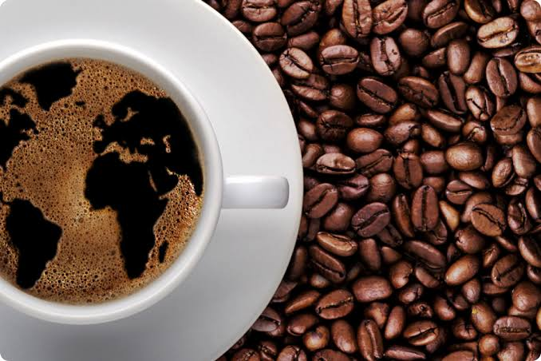

Comercio Justo y
Origen Colombiano
Conectamos la riqueza cultural y saberes ancestrales de nuestras comunidades andinas con productos agroecológicos de pureza superior y comercio 100% transparente.

Integrando Tradición Ancestral y Futuro
Revolucionamos la cadena de valor agrícola preservando los ecosistemas de alta montaña.
Misión Regenerativa
Promover y salvaguardar la identidad y los saberes ancestrales mediante redes de comercio transparente, trazabilidad directa y precios dignos que potencian la economía de nuestras familias productoras.
Visión 2030
Consolidarnos como la plataforma referente regional e internacional en la convergencia de tecnología, sostenibilidad y cultura andina, llevando la pureza del campo colombiano a los mercados globales con huella de carbono neutral.
¿Por qué elegir Raíz Andina?
Trazabilidad Transparente
Cada lote posee un identificador de origen que te permite conocer la finca, la altitud y la familia campesina detrás del producto.
Cultivo Agroforestal
Nuestros cafetales y cacaotales crecen bajo sombra nativa, protegiendo fuentes hídricas y fauna de la cordillera andina.
Retorno Justo
Garantizamos un pago hasta 35% superior al mercado tradicional, reinvirtiendo en educación y tecnología para el agro.
Lleva la Esencia de los Andes a tu Mesa
Prueba nuestro café de especialidad, cacao puro y miel de bosque andino cultivados en armonía con la tierra.